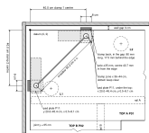
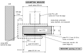
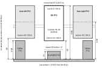
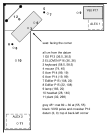

The VIVO STAND-V300CU (P12) has two independent C-clamps and no base bar. Both clamp onto top A's own wall edges, never on the joint: clamp 1 centred at x = 400 (40.0 cm) on the back edge, clamp 2 centred at y = 400 (40.0 cm) on the side-wall end. The crossbar runs on the diagonal between the poles. Each lower jaw bears on a spare steel mending plate (P11), because particleboard crushes under a bare steel jaw over months. Datum: top A's back-left corner (0, 0); x along the back wall, y along the side wall; mm.

| Balloon | Part | Balloon | Part |
|---|---|---|---|
| P01 | Top A, EKBACKEN 2490 × 650 × 28 | P11 | Mending plate 10 × 3 × 0.12 in, two used here as clamp pads |
| P02 | Top B, EKBACKEN 2490 × 650 × 28 | P12 | VIVO STAND-V300CU (clamps, poles, crossbar, arms) |

| Value | mm | Confidence |
|---|---|---|
| Crossbar, centre to centre of its end collars (19¾ in) | 502 | VERIFIED |
| Pole diameter; pole centre in from the desk edge | 35; 43.7 | VERIFIED |
| Clamp back: length along the edge; projection behind the edge (sits in the 30 wall gap) | 80; 17.5 | VERIFIED |
| Lower pad: oval 90 × 50, from 13.5 to 63.5 in from the edge, so it lands on the plate (5–81) | 13.5–63.5 | VERIFIED |
| Ideal clamp centre from the corner: 43.7 + 502 ÷ 1.414; built at 400, the crossbar sets the last millimetre | 399 → 400 | SOURCE-DEFINED |
| Clamp zones (x 360–440, y 0–90 at clamp 1; y 360–440, x 0–90 at clamp 2); pad plate outlines x 200–454 / y 5–81 and y 200–454 / x 5–81 | see Fig. I-1 | SOURCE-DEFINED |
| Top plus plate: 28 + 3 (0.12 in), under 60, so VIVO's Option 1 holes (2 and 4 on the lower clamp) | 31 | SOURCE-DEFINED |
| Top arm reach from the edge | about 89 | ASSUMPTION / FIELD CHECK |
| Maximum jaw opening (must be 31 or more) | ≥ 31 | MEASURE ON HARDWARE |
Lay the pad plates. Lay a spare mending plate P11 flat on the underside, on each pad outline drawn when top A was marked, long side along the edge: x 200–454, y 5–81 at clamp 1; y 200–454, x 5–81 at clamp 2. Loose, no screws: the jaw holds it. SOURCE-DEFINED
Hang both lower clamps, finger-tight only. Clamp 1 centred at x = 400 on A's back edge, clamp 2 centred at y = 400 on A's side-wall end (Fig. I-1). Use the VIVO sheet's Option 1 holes (2 and 4), since 28 + 3 = 31 is under 60. The clamp backs sit in the 30 mm wall gap; the lower pad lands on the plate, 13.5–63.5 from the edge (Fig. I-2).
Fit the poles and the crossbar as the spacing guide (VIVO sheet step 3). The crossbar measured 502 centre to centre, so it fixes the pole spacing. Only now tighten both clamps, with the crossbar on. VERIFIED
Refit the crossbar at monitor height (VIVO sheet step 6): 400–430 above the top (1230–1260 from the floor).
Hang the three screens, all landscape, and set the heights in Fig. I-3. The G5 goes on the centre bracket (VESA 75), screen centred on the diagonal at (365, 365), 200 (20 cm) in front of the crossbar. The Acers go on the side arms, toed in 15°; each Acer's near end ends up about 120 (12 cm) from the G5's curved end. The side arms run along the wall behind each panel, then forward into the VESA plate.
| Screen | On the mount | Rating | Confidence |
|---|---|---|---|
| Samsung Odyssey G5 32 in P13 (1000R, VESA 75), centre | about 5 kg | centre bracket 48.4 lb curved (59.4 lb flat); top edge limit 26.5 in (673) above the top | SOURCE-DEFINED |
| Acer XZ320QU 31.5 in P14 (1500R, VESA 100), each side | about 5 kg (5.6 kg with its stand) | 17.6 lb (8 kg) per side arm | SOURCE-DEFINED |

| Item | Above the top | From the floor | Note |
|---|---|---|---|
| Top surface | 0 | 830 | 28 top on an 802 underside |
| ELLOVEN P16 top | 100 | 930 | 130 under the G5 |
| G5 bottom edge | 230 | 1060 | SOURCE-DEFINED |
| Edifier P15 top | 234 | 1064 | 26 under each Acer |
| Acer bottom edges | 260 | 1090 | centre 465 above the top |
| VIVO crossbar | 400–430 | 1230–1260 | refitted at monitor height |
| G5 top edge | 669 | 1499 | 4 under the mount's 673 (26.5 in) limit |

ELLOVEN at (360, 360), turned 45°, drawer toward you: its back corners clear the clamp plates and poles by over 20. At (330, 330) it would sit on the clamps.
The mat's back edge touches the ELLOVEN's front feet; its front edge reaches the inside corner of the L.
The Y60 (P17) stands on its I/O end on the printed pedestal over ALEX 1: long axis along the back wall, side glass toward you, front glass up. Keep it there, not mid-wing.
| Item | Centre (x, y) mm | How |
|---|---|---|
| G5 P13 | (365, 365) | on the diagonal, 200 in front of the crossbar |
| ELLOVEN P16 | (360, 360) | turned 45°, drawer toward you |
| Deskmat 800 × 300 | (550, 550) | turned 45° |
| NuPhy Air75 V2; mouse | (585, 585); (740, 450) | keyboard turned 45°, on the mat |
| Acer P14, right; left | (990, 190); (190, 990) | along each wall, toed 15° toward you |
| Edifier P15 ×2 | (1080, 220); (220, 1080) | grilles toward you, toed with the Acers |
| HYTE Y60 P17 | x 1975–2465, y 45–355 | on its pedestal, over ALEX 1 |
| ELYONA lamp | (1830, 200) | beside the Y60, arm toward the keyboard |
| Headset stand; plant | (280, 1400); (320, 2980) | on top B, hook toward you; plant over ALEX 2 |
All positions SOURCE-DEFINED (docs/build-manual.md step 8).